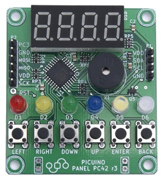

1. Introducción al panel PC42¶
{kind=link}
El panel de control Picuino PC42 es un componente electrónico que permite a una placa Arduino mostrar y recibir información por parte del usuario con luces led, pulsadores, sonidos y un display de 7 segmentos.
Con el panel de control, realizar programas interactivos para Arduino es más sencillo e intuitivo. Los numerosos ejemplos y ejercicios de este tutorial facilitan el aprendizaje desde cero, ayudando con ejercicios guiados que reducen la complejidad y las dudas.
La instalación es muy sencilla, solo es necesario conectar 4 cables e instalar una librería en el entorno IDE de Arduino. Todos los pasos están detallados en el apartado de instalación.
Las entradas del panel están protegidas contra inversión de polaridad, de manera que un error en la conexión no destruye el panel.
¿Por qué utilizar el panel de control PC42?¶
- Incluye un tutorial que sirve de guía de aprendizaje paso a paso.
- Incluye ejercicios para aprender a programar.
- Incluye Ardublock para programar con bloques gráficos.
- Evita errores porque reduce conexiones de cables con placas de prototipos.
- Agrupa en una pequeña placa muchos componentes discretos.
- Es robusto y no se destruye por una mala conexión.
- Facilita el montaje rápido de proyectos complejos.
Características técnicas¶
- El panel de control está compuesto por los siguientes componentes:
- Un visualizador de 7 segmentos y 4 cifras
- Seis led, uno de ellos RGB
- Un zumbador para emitir tonos
- Seis pulsadores
- Un microcontrolador que controla todos los componentes
- Sus especificaciones técnicas son las siguientes:
- Tensión de alimentación: 5 voltios.
- Consumo eléctrico: 8mA en reposo, 80 mA con todos los led y display encendidos.
- Comunicación serie TWI / I2C con dirección 74 decimal (0x4A hexadecimal)
- Dimensiones: 50 x 55 x 12 mm
- Peso: 10 gr
Advertencia
Una tensión de alimentación mayor de 5 voltios dañará la placa de forma permanente.